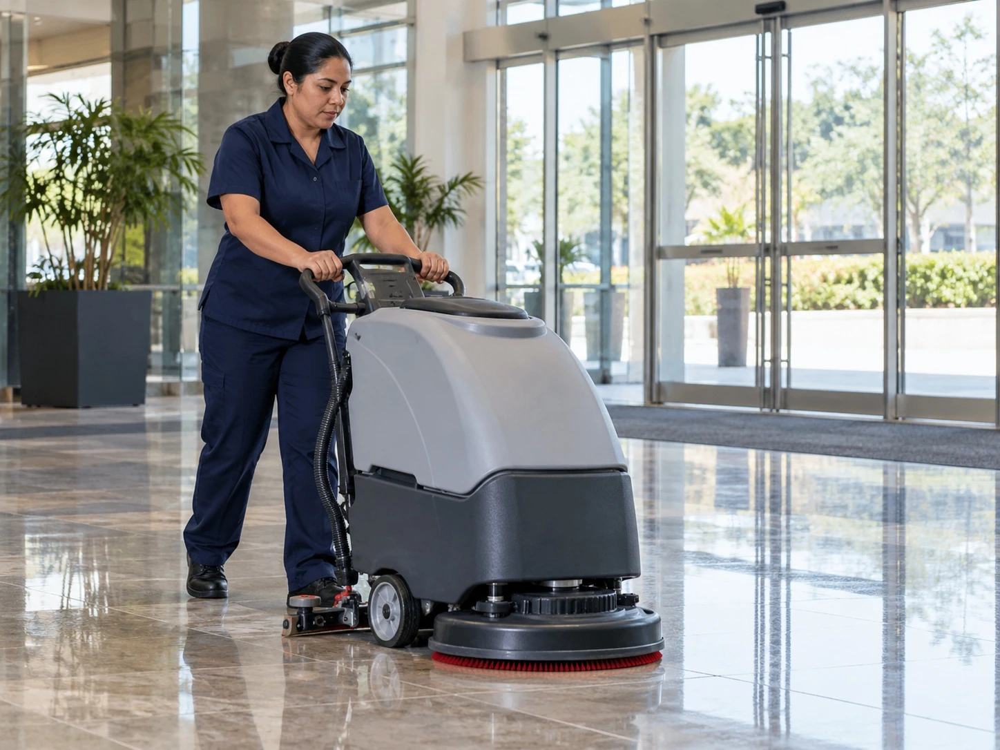
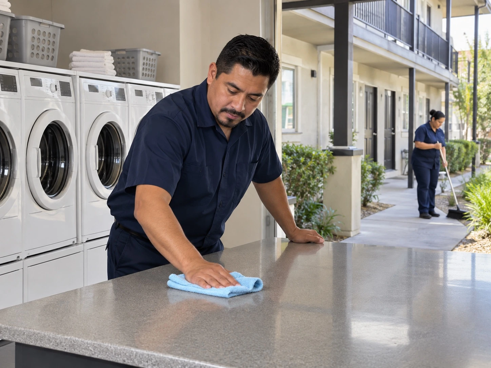
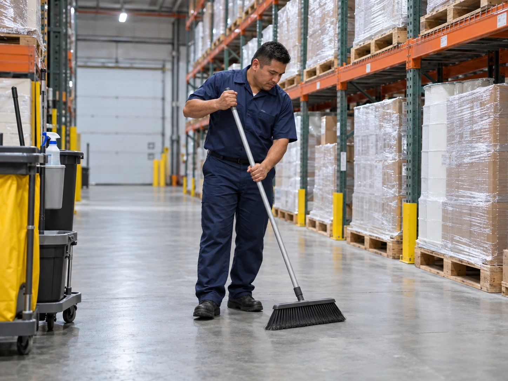
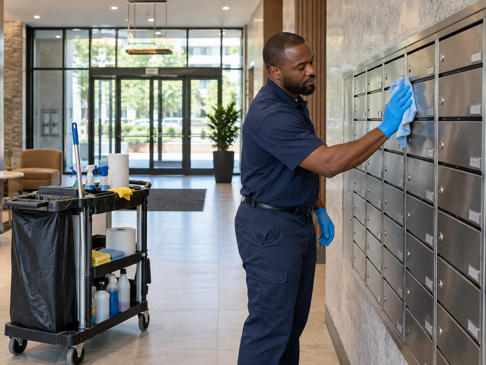
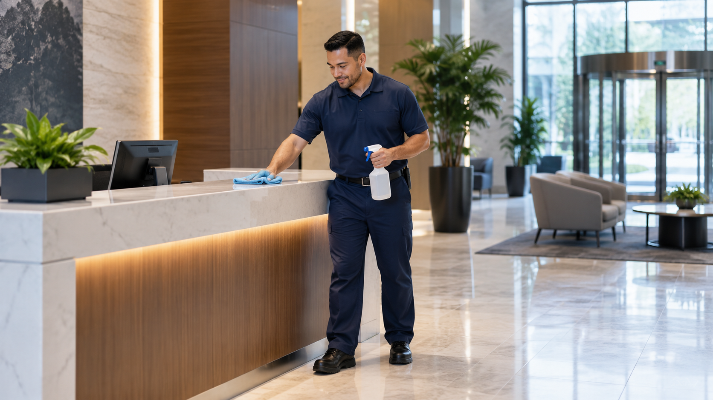
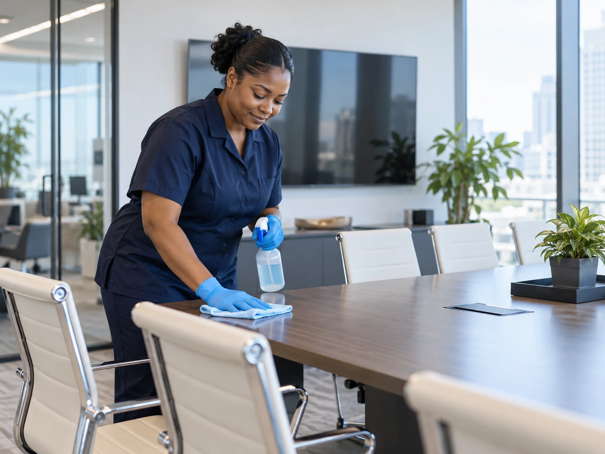
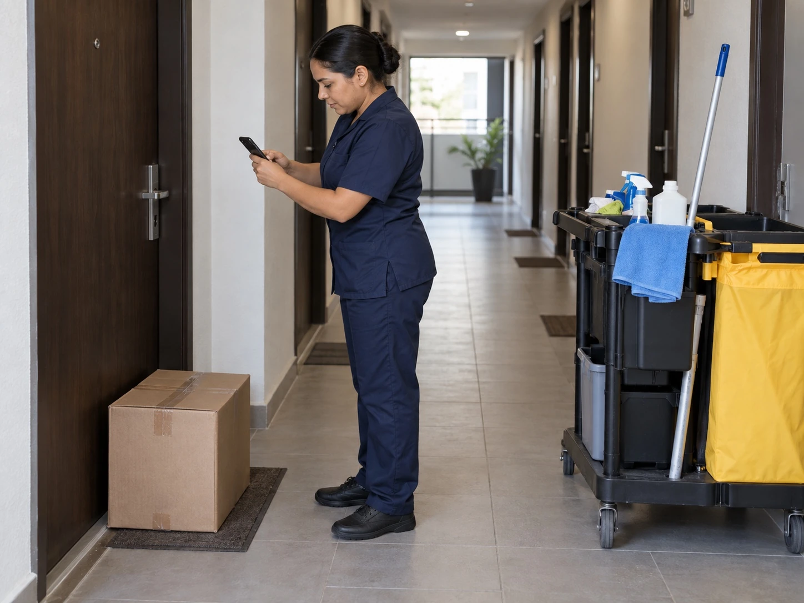

Janitorial Cleaning
Professional janitorial cleaning for offices, retail stores, warehouses, and multi use buildings, with schedules built around the way the property is used.
See Janitorial ServicesParadigm Janitorial Services provides commercial and residential cleaning, power washing, window cleaning, and floor care across Los Angeles County and San Bernardino County. Service is planned around the property, access, traffic, and operating hours.
Professional janitorial cleaning for offices, retail stores, warehouses, and multi use buildings, with schedules built around the way the property is used.
See Janitorial ServicesPower washing for concrete, walkways, building exteriors, storefronts, parking areas, patios, decks, and other exterior surfaces.
See Power WashingInterior and exterior window cleaning for estates, storefronts, offices, and accessible multi story buildings.
See Window CleaningFloor care for tile, stone, carpet, and other flooring, including scrubbing, polishing, carpet cleaning, and detailed maintenance.
See Floor Care

Cleaning support for offices, retail spaces, learning facilities, restaurants, warehouses, industrial properties, and construction environments.
See Commercial Cleaning

Property focused cleaning for estates, apartment buildings, common areas, floors, windows, exterior surfaces, renovations, and turnovers.
See Residential CleaningOngoing porter support for lobbies, restrooms, common areas, trash, spills, supply restocking, and high traffic spaces while the property is active.
See Porter ServiceCleaning for dining areas, commercial kitchens, restrooms, floors, high touch surfaces, and closing time cleanup, scheduled around operating hours.
See Restaurant CleaningStart with the property type, then the cleaning can be built around traffic, access, and schedule.

Offices, retail, restaurants, learning facilities, warehouses, construction sites, and active properties.
View Commercial Cleaning
Estates, apartment buildings, common areas, turnovers, windows, floors, and exterior surfaces.
View Residential Property CleaningCleaning is built around the property, the schedule, and the areas that need consistent attention.

Service can be scheduled around operating hours, access, traffic, priority areas, and the spaces that need more frequent attention.
That gives the cleaning team a clear scope and gives the property manager a schedule that is easier to maintain.
See How Paradigm WorksLong hours, renovations, shared spaces, and tight schedules can change the cleaning plan. Start with the topic that matches what is happening at your property.



Paradigm Janitorial Services serves commercial and residential properties across Los Angeles County and San Bernardino County.
Los Angeles, Hollywood, West LA, Mid City, Culver City, Downtown LA, Burbank, Glendale, Pasadena, South LA, and surrounding neighborhoods.
View Los Angeles County ServicesCommercial and residential cleaning support across major communities throughout San Bernardino County.
View San Bernardino County Services